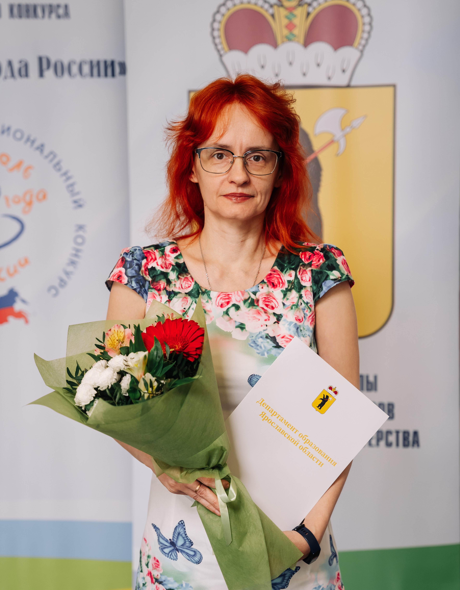

Я преподаватель колледжа и люблю своё дело. За плечами — 31 год педагогического стажа: тридцать лет школы, где я вела информатику и биологию, и с 2025 года — колледж, где готовлю специалистов по сетевому администрированию.
Мне кажется, хороший преподаватель не просто передаёт знания. Он помогает поверить, что сложное — посильно. Поэтому я учу студентов понимать логику сетей и серверов, а не заучивать команды. И этот сайт — продолжение того же разговора: здесь материалы, проекты, методические наработки и просто возможность написать мне.
Если вы студент, коллега или работодатель — располагайтесь. Я открыта к вопросам и сотрудничеству.
Мне кажется, хороший преподаватель не просто передаёт знания. Он помогает поверить, что сложное — посильно. Поэтому я учу студентов понимать логику сетей и серверов, а не заучивать команды.
И этот сайт — продолжение того же разговора: здесь материалы, проекты, методические наработки и просто возможность написать мне. Если вы студент, коллега или работодатель — располагайтесь. Я открыта к вопросам и сотрудничеству.
Цифры, которые описывают профессиональный профиль. Но для меня это не только цифры — за каждой из них стоят люди и годы работы.
Сайт построен как схема сети: каждый раздел — узел с материалами и связями.
ПМ.01–ПМ.03 и ОП.04–ОП.13: рабочие программы, тематические планы, лабораторные работы.
Библиотека с фильтрами: презентации, конспекты, лабораторные, тесты, документы.
Курсовые, исследовательские работы, конкурсы и результаты обучающихся.
Повышение квалификации, открытые занятия, выступления, работа в жюри.
Здесь я собираю то, что может пригодиться.
Мне хочется, чтобы сайт был полезен не только студентам. Коллеги найдут здесь методические разработки, работодатели — представление о том, чему я учу, а участники конкурсов и аттестации — подтверждения результатов.
Я не прячу достижения: Почётная грамота Министерства просвещения РФ 2020 года, победа в муниципальном этапе «Учитель года России 2022», участие в региональном этапе, победы в региональном этапе II Всероссийской олимпиады «ДНК науки» в 2022 и 2023 годах, благодарности ФГБУ «ФИОКО» за организацию ВПР. Но для меня это не финальная точка, а часть пути.
Если вы зашли сюда как студент — ищите материалы, задавайте вопросы, не бойтесь ошибаться. Если вы коллега — давайте обмениваться опытом, я открыта к разговору. Если вы работодатель — посмотрите, чему учатся ребята, и скажите, чего не хватает. Мне это правда интересно.
Профессия не стоит на месте. Я сама продолжаю учиться: в 2026 году прошла курс по нейросетям в образовании в Университете Иннополис, в декабре 2025 года провела открытое занятие по установке и настройке Windows Server, а до этого вела курсы для педагогов — больше ста человек обучила работе с сайтом учителя-предметника, Excel и Microsoft Office. Я люблю свою профессию и хочу делиться тем, что знаю. Если у вас есть вопрос — напишите мне.
Написать мнеМой путь начался в школе. Тридцать лет я была учителем информатики и биологии: вела уроки, ОГЭ, ВПР, внеурочные курсы, руководила центром «Точка роста». Школа научила меня главному — объяснять сложное простыми словами. Этот навык я берегу до сих пор.
С ноября 2025 года я преподаю в ГПОАУ ЯО «Профессионально-педагогический колледж Ростова Великого» (Борисоглебский ЦПО). Здесь другой уровень ответственности: я готовлю специалистов по сетевому администрированию, и за моими занятиями стоит не абстрактная успеваемость, а будущая работа конкретных людей. Я вижу, как студенты собирают сети, настраивают Windows Server, разбираются с Linux, пробуют Cisco. И понимаю, что школа и колледж — не разные миры, а две ступени одного дела.
В работе я держусь нескольких простых принципов. Первый: понимать важнее, чем знать наизусть. Второй: ошибаться не страшно, страшно не пробовать. Третий: за техникой всегда стоит человек, и уважение к нему важнее любой методики.
Поэтому я использую проблемное обучение, кейсы, работу в малых группах, ролевые и деловые игры, смысловое чтение — всё, что помогает думать, а не только отвечать. И внимательно отношусь к здоровью студентов: чередование нагрузки, посадка, освещение, проветривание — это не мелочи, а условие того, что человек сохранит интерес к учёбе.
Читать историю целиком →